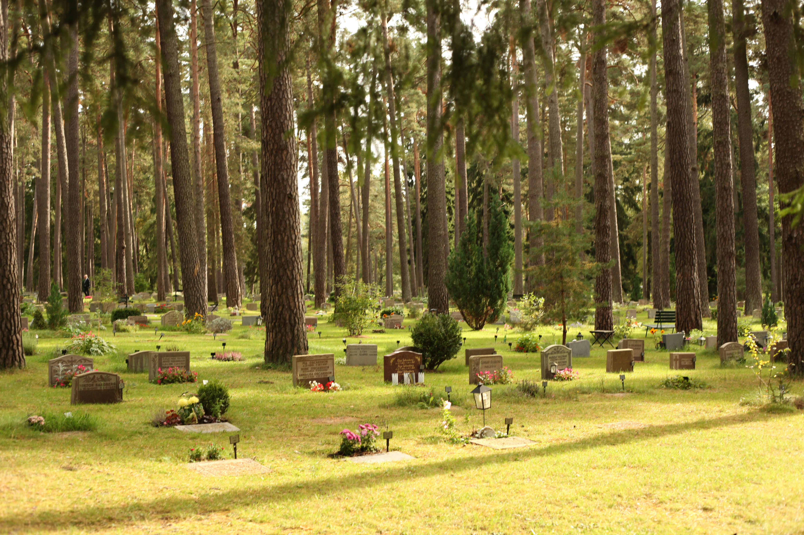
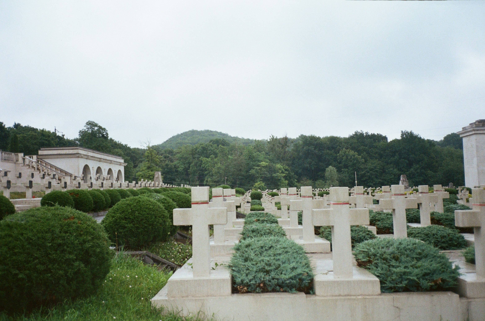
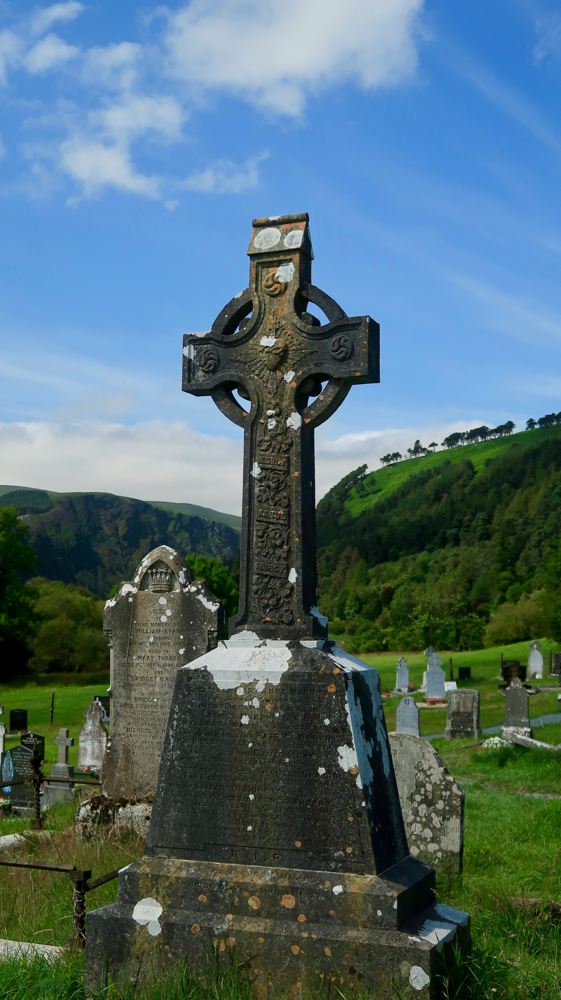
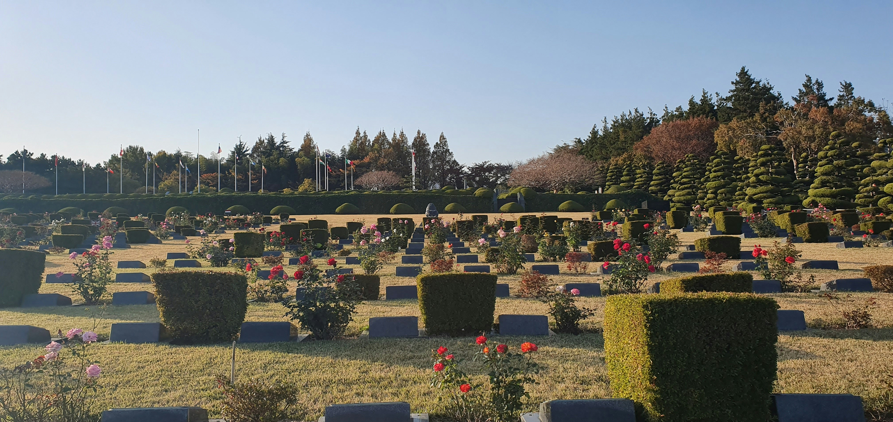
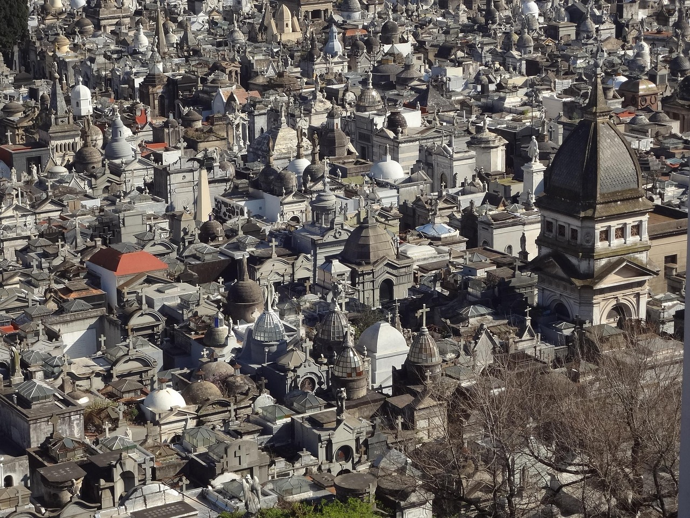
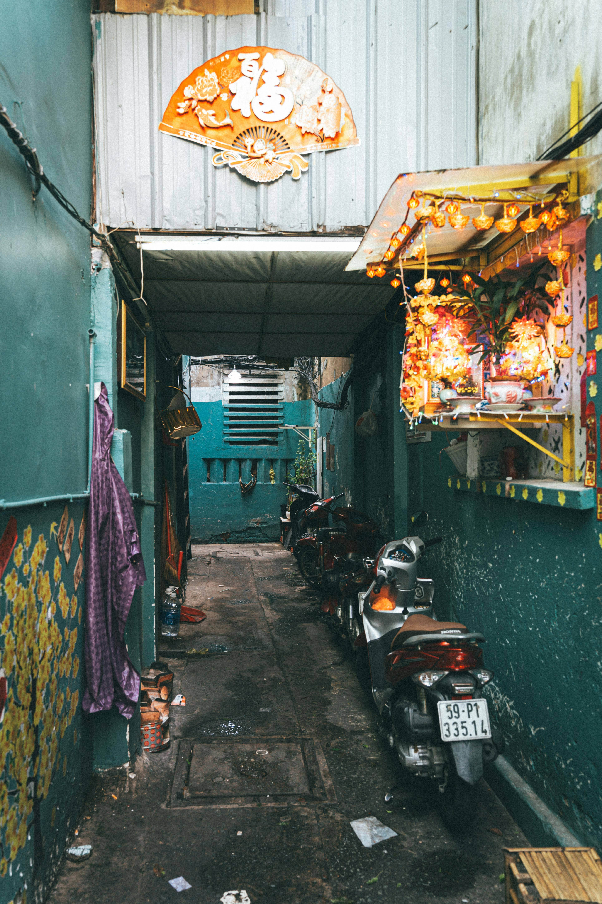
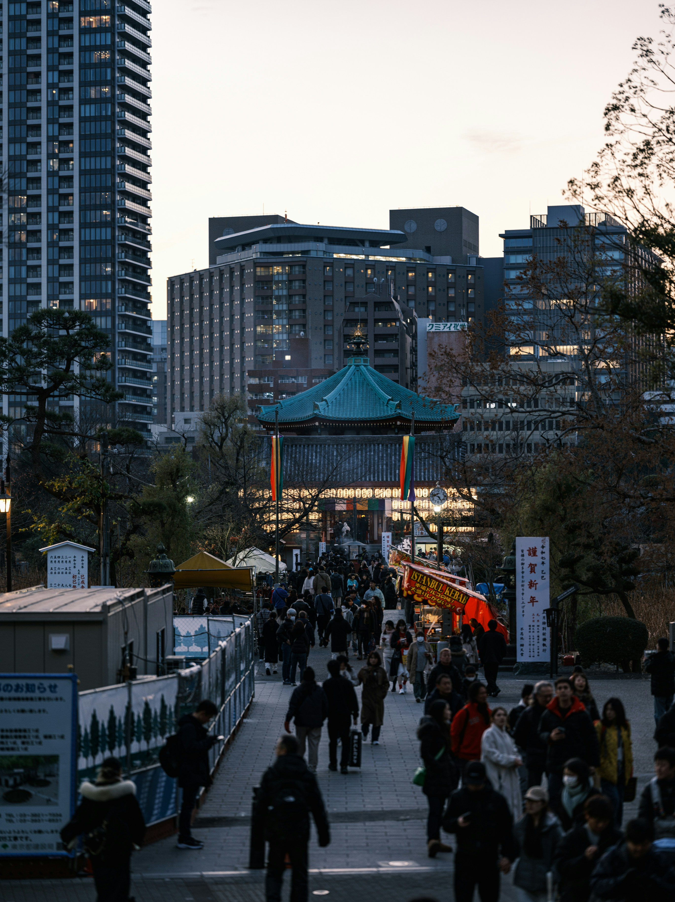
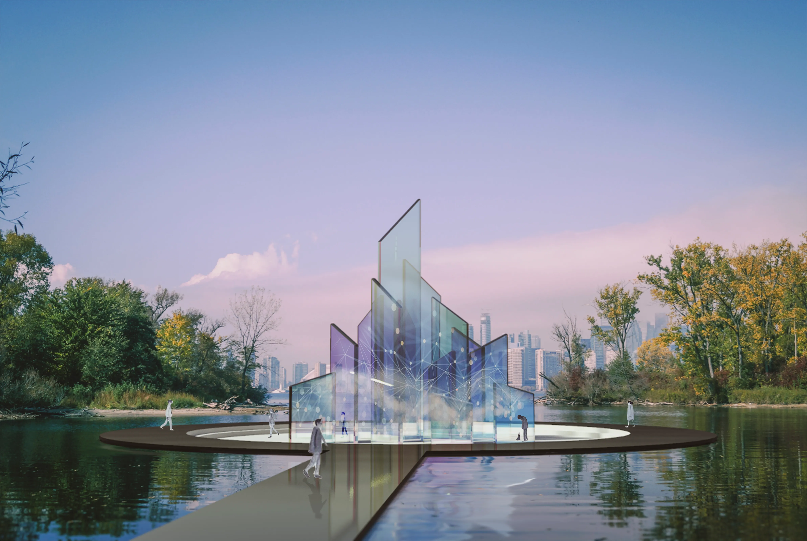
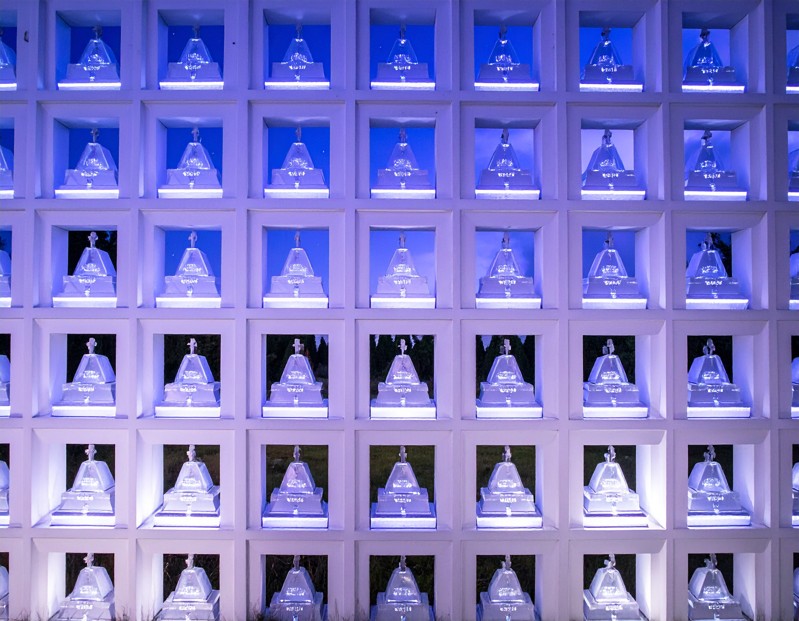

Here Lies the Past




Here Lies the Present





Here Lies the Permeation

Here Lies Possibility of Posterity

From Prayer to Pixels

Passing in Perpetuity
(Images 1–6, Left to Right, Top to Bottom)
Starnes (2025), Ishida (2023), Eve (2021), Reel Focus Productions (2024), Sayles (2020), Yu (2019).
(Images 1–4, Left to Right, Top to Bottom)
Nevozhai (2019), Merrity (2023), Balye (2018), Pixabay (2015).
(Images 1–3, Left to Right, Top to Bottom)
Cuong (2024), Delgado (2022), Sakurai (2025).
(Images 1–6, Left to Right, Top to Bottom)
Adobe Firefly (2025), Lee (2020), Adobe Firefly (2025), Adobe Firefly (2025), Zhu (2019) Adobe Firefly (2025).
AI was used For the creation of images 1, 3, 4, and 6 in the section "Here Lies Possibility of Permeation".
AI was used to assist in the HTML formatting for tailwindcss of this footer section, including the Image References and the AI Disclaimer